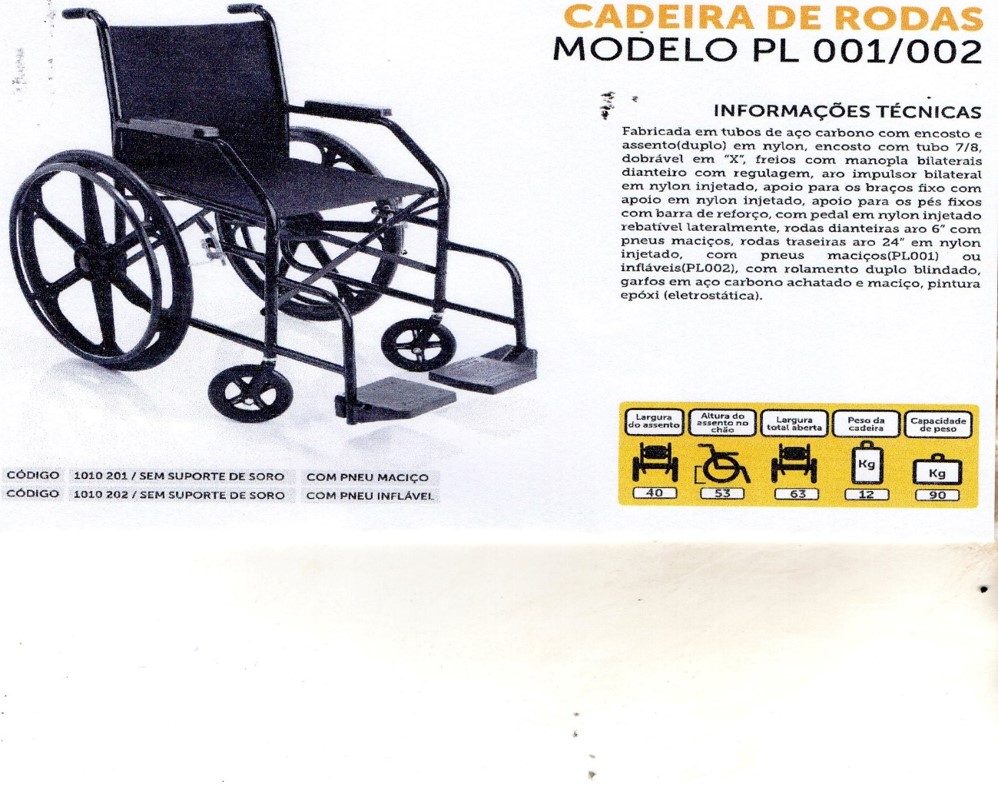

50 Cadeiras de rodas
Parte do projeto EU PRECISO DE DEUS tem o objetivo de entregar 50 cadeiras de rodas manual, doadas pelo empresário Edison Lobão Filho, que em atitude de Ação de Graças ao que Deus fez na vida dele através de Jesus Cristo, manifestou o desejo de ajudar pessoas que estejam necessitando desse apoio. Essa ação ocorrerá em parceria com a Igreja Batista do Angelim(Pr. Joaquim), que através do seu ministério fará o cadastro dos cadeirantes carentes e organização para a entrega das referidas cadeiras, que se dará em culto previamente organizado. As etapas se darão prevendo: divulgação em mídia social, cadastro dos cadeirantes, triagem das reais necessidades e entrega em culto.
Casa D. Dada E SR. Carlinhos
Esta ação tem o objetivo de construir uma casa para D. Dada e Sr. Carlinhos, ele aposentado e ela desempregada(lava roupa pra fora), e hoje vivem dentro de uma casa, localizada à RUA MARECHAL CASTELO BRANCO, Nº 15, BAIRRO: PÃO DE AÇÚCAR, que está caindo aos pedaços, pois devido às constantes chuvas, veio a desabar uma parede e está ameaçada a desabar por inteiro, e os mesmos ainda estão no local, sobrevivendo sem segurança, infra-estrutura, correndo até mesmo risco de vida, uma vez que não podem desistir da casa porque não tem para onde ir. Os voluntários arrecadarão materiais de construção e/ou valores correspondentes para aquisição do que for necessário (conforme tabela de material), assim como será necessário o valor correspondente para a mão de obra especializada, como o pedreiro e dois ajudantes. As etapas se darão prevendo: aquisição de material, inicio do trabalho por parte do pedreiro, e o tempo estimado para a conclusão da obra. A entrega da casa se dará com um culto em ação.

Sopão no kamaleão
Foi realizado em 2011, teve o objetivo de reunir um grande número de pessoas, estimativa de 1000 pessoas, para um culto ao Senhor jesus, onde foi entregue pão e sopa, sendo que na entrada cada um recebeu uma senha que teve direito de participar de sorteios e prêmios. Pela noite para finalizar a programação houve a apresentação de um grupo gospel.